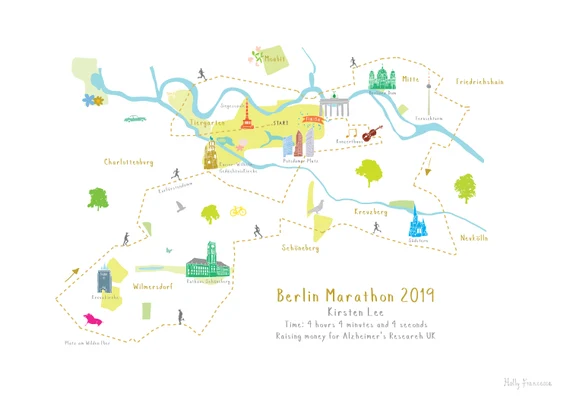

Lieblingsort
Stadt, Parks & Abendsonne
Am späten Nachmittag durch die Stadt – Architektur, Parks, Menschen im Alltag.
Ich war nie besonders sportlich. Natürlich hatte ich – wie viele andere – mein Fitnessstudio, um mich fit zu halten, aber das war mehr Pflicht als Leidenschaft. Irgendwann habe ich gemerkt, wie gut mir das Laufen als Ausgleich zu meinem Bürojob tut. Schuhe an und los geht’s. Mittlerweile ist das Laufen für mich zu einer Routine geworden, die mein Körper braucht und meinen Geist beruhigt.
Der Moment, wenn der Alltag leiser wird. Jeder Schritt ist ein Schritt nach vorn. Was ich besonders liebe, ist die Freiheit, die Intensität selbst zu bestimmen – ob ich sprinten möchte oder einen steileren Weg nehme, ich entscheide. Und besonders nach jedem Lauf dieses Gefühl: „Ich habe es wieder geschafft.“ Ein Gefühl, das ich nicht mehr missen möchte. Jeder Lauf wird so zu einem kleinen Sieg über die eigene Trägheit.
Am liebsten laufe ich am späten Nachmittag direkt bei mir durch die Stadt. Es gibt so viel zu sehen – Architektur, lebendige Parks oder die unterschiedlichsten Menschen in ihrem Alltagstrott. Wenn alles geschafft ist, die Sonne langsam untergeht und der Tag sich dem Ende neigt, gebe ich für heute noch ein letztes Mal alles.
Mein nächstes Ziel ist es, einen Halbmarathon im Jahr 2026 zu laufen. Ich trainiere regelmäßig darauf hin – nicht für die Zeit, sondern für das Gefühl, über die Ziellinie zu laufen. Danach soll auch ein Marathon folgen – und vielleicht irgendwann sogar einer der World Marathon Majors.
„Es ist nicht der Lauf, sondern der Weg, der dich verändert.“